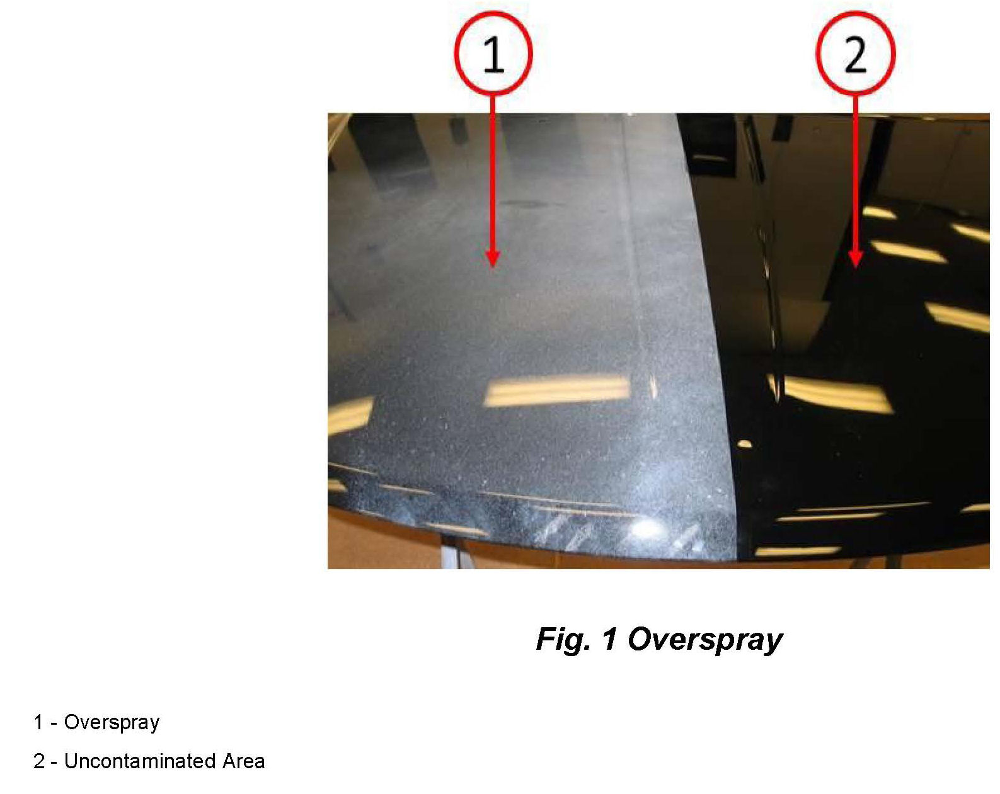
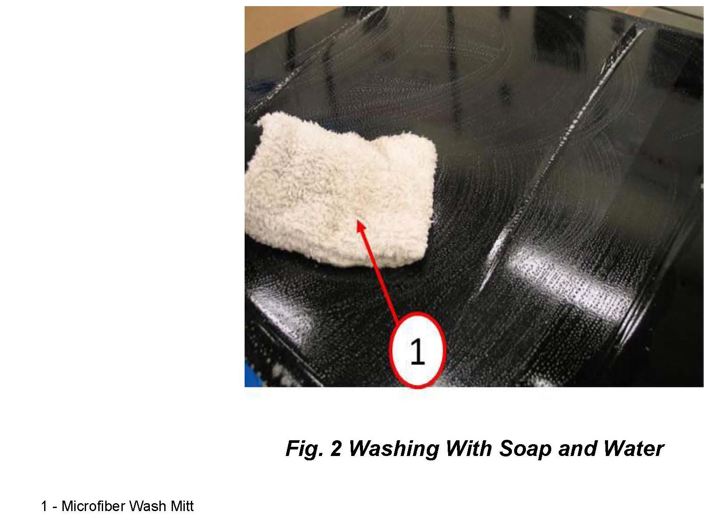
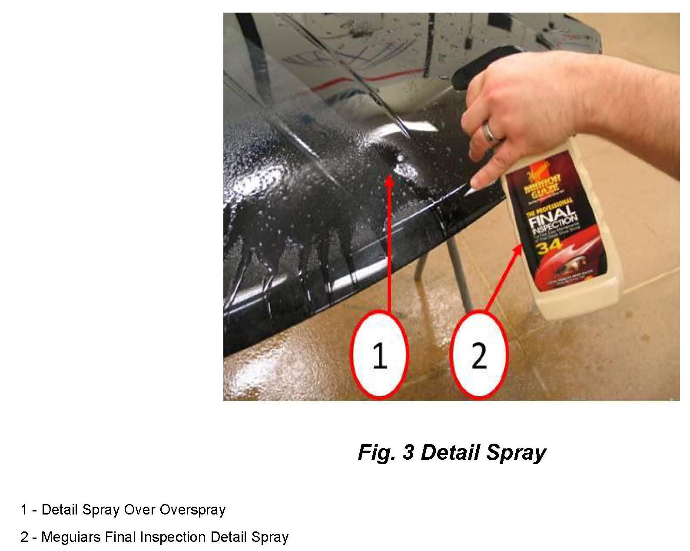
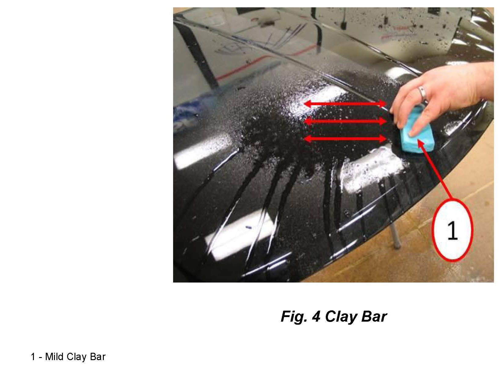
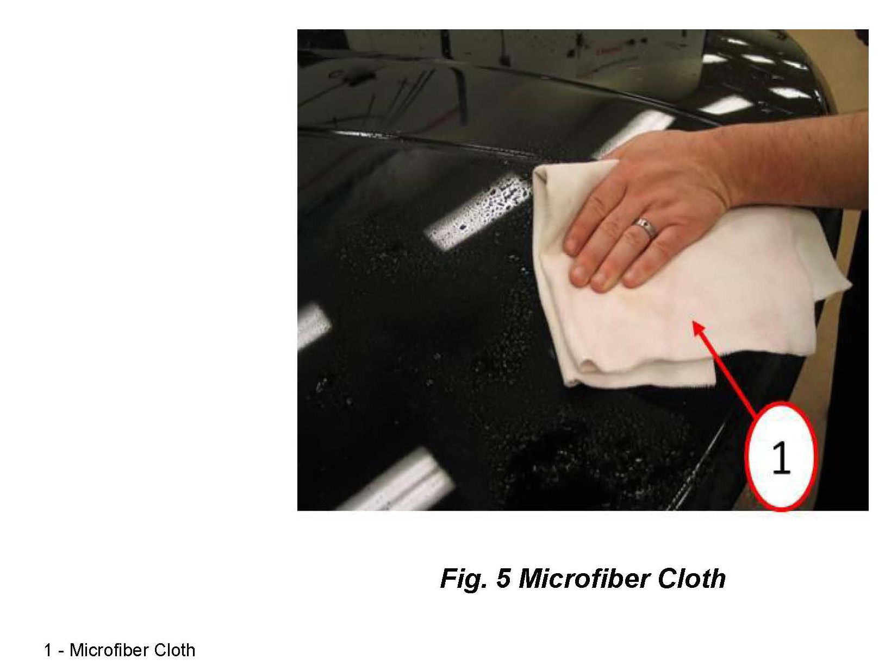
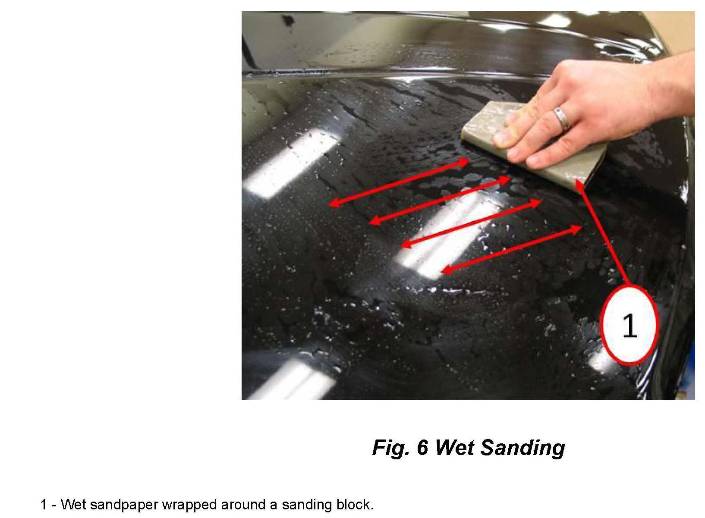
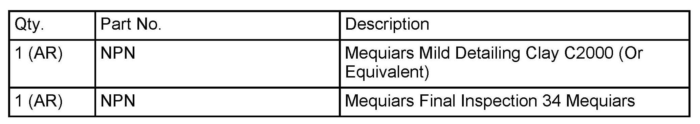
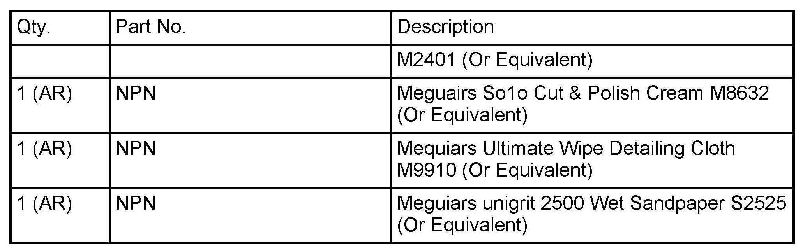
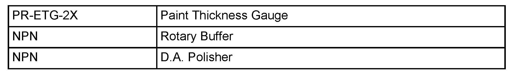

Body - Paint Overspray Removal Procedures
NUMBER: 31-001-13GROUP: Collision Bulletin
DATE: January 11, 2013
SUBJECT:
Overspray Removal
OVERVIEW:
This bulletin involves removing overspray which can be a result of industrial fallout and/or a poor refinishing process.

DISCUSSION:
Depending on the severity and extent of overspray on painted surfaces the removal process will vary. Always begin using the least aggressive method. An example of overspray is shown in (Fig. 1).

1. Before removing any overspray, wash the effected area with soap and water as shown in (Fig. 2).

2. Work in a 12"(305mm) x12"(305mm) area at a time and apply Meguiars Final Inspection or a detail spray equivalent to the effected area (Fig. 3).

3. Using a clay bar work in a unidirectional pattern while the detail spray applied in Step # 2 is still wet as shown in (Fig. 4).
NOTE:
Do not move the clay bar in a circular direction on the panel surface as it will create scratches.
4. As the overspray is removed, remove the detail spray residue with a microfiber cloth and continue to the next effected area until all the overspray is removed (Fig. 5).
5. If overspray cannot be removed with a clay bar and Meguiars Final Inspection or equivalent, proceed to Step # 6.
6. Use a D.A. polisher with a foam finishing pad and Meguairs So1o Cut & Polish Cream Or an equivalent compound and polish cream, working in a 12"(305mm) x12"(305mm) area. Was the overspray removed?

a. Yes >>> Continue using this method on the other affected painted surfaces and remove polishing residue with a microfiber cloth as shown in (Fig. 5).
b. No >>> Proceed to Step # 7.
7. Use a rotary buffer with a foam polishing pad set to a preferred RPM and Meguairs So1o Cut & Polish Cream Or an equivalent compound and polish cream, working in a 12"(305mm) x12"(305mm) area. Was the overspray removed?
a. Yes >>> Continue using this method on the other affected painted surfaces and remove polishing residue with a microfiber cloth as shown in (Fig. 5).
b. No >>> Proceed to Step # 8.
NOTE:
A rotary buffer must be used by a trained technician as it can permanently damage the painted surface if not used correctly. Damaged areas can only be repaired by refinishing the affected vehicle panel. Prior to using a rotary buffer measure the paint thickness using Gauge #PR-ETG-2X or equivalent to determine clearcoat or single-stage paint thickness before and after the repair.
CAUTION:
Do not remove more than 0.2 mils of clearcoat when polishing. Most vehicles have 1.5 mils of clearcoat film thickness.

8. Lightly wet sand the overspray with Meguiars unigrit 2500 wet sandpaper (or equivalent) with a Mequiars sanding pad (or equivalent) in a unidirectional pattern until the overspray has been removed or more than 0.2 mils of clearcoat has been removed (Fig. 6).
9. Use a rotary buffer with a cutting polishing pad set to a preferred RPM and Meguairs So1o Cut & Polish Cream Or an equivalent compound and polish cream, working in a 12"(305mm)x12"(305mm) area.
10. Remove the compound residue with a microfiber cloth to verify the scratches have been removed. Were the sand scratches removed (Fig. 5)?
a. Yes >>> Proceed to Step # 11.
b. No >>> Repeat Step # 9.
CAUTION:
Do not remove more than 0.5 mils of clearcoat when wet sanding an
polishing. Most vehicles have 1.5 mils of clearcoat film thickness.
11. Use a rotary buffer with a foam polishing pad set to a preferred RPM and Meguairs So1o Cut & Polish Cream Or an equivalent compound and polish cream, working in a 12"(305mm) x12"(305mm) area. Was the overspray removed?
a. Yes >>> Continue using this method with Step # 10 on the other affected painted surfaces and remove polishing residue with a microfiber cloth as shown in (Fig. 5).
b. No >>> Suspect area refinish will be required to remove overspray.


PARTS REQUIRED:

SPECIAL TOOLS/EQUIPMENT REQUIRED:
POLICY:
Information Only.
Disclaimer:
This bulletin is supplied as technical information only and is not an authorization for repair.